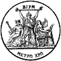
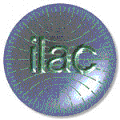
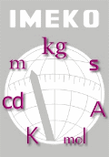
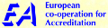
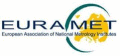
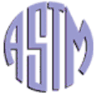

|
||||||||||||||||
| National and International Measurement Organisations and Institutes | ||||||||||||||||
National Measurement
Institutes
International Organisations
European Organisations
UK
Organisations
USA Organisations
Other National / Regional
Organisations
National Measurement Institutes
|
Argentina |
Instituto Nacional de Tecnologia Industrial |
|
|
Australia |
National Measurement Institute |
|
|
Austria |
Bundesamt für Eich- und Vermessungswesen |
|
|
Belgium |
MD |
Metrologische Dienst |
|
Brazil |
Instituto Nacional de Metrologia, Normalização e Qualidade Industrial |
|
|
Canada |
Institute for National Measurement Standards - National Research Council |
|
|
Chile |
Instituto Nacional de Normalizacion |
|
|
China |
NIM |
National Institute of Metrology |
|
Croatia |
Državni Zavod za Mjeriteljstvo |
|
|
Czech Republic |
Czech Metrology Institute |
|
|
Denmark |
Danish Fundamental Metrology |
|
|
Ecuador |
Instituto Ecuatoriano de Normalizacion |
|
|
Egypt |
NIS |
National Institute for Standards |
|
Finland |
Mittatekniikan Keskus |
|
|
France |
Laboratoire National de Métrologie et d'Essais |
|
|
Germany |
Physikalisch-Technische Bundesanstalt |
|
|
Hong Kong |
Standards and Calibration Laboratory |
|
|
Hungary |
Magyar Kereskedelmi és Engedélyezési Hivatal |
|
|
Ireland |
National Metrology Laboratory |
|
|
Italy |
Istituto Nazionale di Ricerca Metrologica |
|
|
Japan |
National Metrology Institute of Japan |
|
|
Kenya |
Kenya Bureau of Standards |
|
|
Korea |
Korea Research Institute of Standards and Science |
|
|
Malaysia |
Formerly Standards and Industrial Research Institute of Malaysia |
|
|
Mexico |
Centro Nacional de Metrología |
|
|
Netherlands |
Nederlands Meetinstituut |
|
|
New Zealand |
Measurement Standards Laboratory |
|
|
Norway |
Norwegian Metrology Service |
|
|
Poland |
Glówny Urzad Miar |
|
|
Portugal |
Instituto Português da Qualidade |
|
|
Russian Federation |
All-Russia D I Mendeleyev Scientific and Research Institute for Metrology |
|
|
Singapore |
Standards, PRoductivity, and INnovation Board |
|
|
Slovakia |
Úrad pre Normalizáciu Metrológiu a Skúšobníctvo |
|
|
Slovenia |
Metrology Institute of the Republic of Slovenia |
|
|
South Africa |
National Metrology Institute of South Africa |
|
|
Spain |
Centro Español de Metrología |
|
|
Sweden |
Sveriges Provnings- och Forskningsinstitut |
|
|
Switzerland |
Metrologie und Akkreditierung Schweiz |
|
|
Taiwan |
Center for Measurement Standards |
|
|
Thailand |
National Institute of Metrology (Thailand) |
|
|
Trinidad & Tobago |
Trinidad and Tobago Bureau of Standards |
|
|
Turkey |
Ulusal Metroloji Enstitüsü |
|
|
United Kingdom |
National Physical Laboratory |
|
|
United States of America |
National Institute of Standards and Technology |
|
|
Uruguay |
Laboratorio Tecnológico del Uruguay |
International
Organisations
|  | Bureau International des Poids et Mesures (International Office of Weights and Measures) | The task of the BIPM is to ensure world-wide uniformity of measurements and their traceability to the International System of Units (SI). It does this with the authority of the Convention of the Metre, a diplomatic treaty between forty-eight nations, and it operates through a series of Consultative Committees, whose members are the national metrology laboratories of the Member States of the Convention, and through its own laboratory work. The BIPM carries out measurement-related research. It takes part in, and organizes, international comparisons of national measurement standards, and it carries out calibrations for Member States. |
|  | International Laboratory Accreditation Cooperation | ILAC is an international cooperation between the various laboratory accreditation schemes operated throughout the world. Founded twenty years ago, ILAC was formalised as a cooperation in 1996 when 44 national bodies signed a Memorandum of Understanding (MOU) in Amsterdam. This MOU provides the basis for the further development of the Cooperation and the eventual establishment of a multilateral recognition agreement between ILAC member bodies. Such an agreement will further enhance and facilitate the international acceptance of test data, and the elimination of technical barriers to trade. |
|  | International Measurement Confederation | Founded in 1958 - IMEKO is a non-governmental federation of 34 Member Organizations individually concerned with the advancement of measurement technology. Its fundamental objectives are the promotion of international interchange of scientific and technical information in the field of measurement and instrumentation and the enhancement of international co-operation among scientists and engineers from research and industry. |
| International Organization for Standardization | The International Organization for Standardization (ISO) is a worldwide federation of national standards bodies from some 130 countries, one from each country. ISO is a non-governmental organization established in 1947. The mission of ISO is to promote the development of standardization and related activities in the world with a view to facilitating the international exchange of goods and services, and to developing cooperation in the spheres of intellectual, scientific, technological and economic activity. | |
| Organisation Internationale de Métrologie Légale | The International Organization of Legal Metrology (OIML) was established in 1955 (see the Convention) in order to promote the global harmonization of legal metrology procedures. Since that time, the OIML has developed a worldwide technical structure that provides its Members with metrological guidelines for the elaboration of national and regional requirements concerning the manufacture and use of measuring instruments for legal metrology applications. |
European
Organisations
| Comité Européen de Normalisation (European Committee for Standardization) | CEN's mission is to promote voluntary technical harmonization in Europe in conjunction with worldwide bodies and its partners in Europe. Harmonization diminishes trade barriers, promotes safety, allows interoperability of products, systems and services, and promotes common technical understanding. In Europe, CEN works in partnership with CENELEC - the European Committee for Electrotechnical Standardization and ETSI - the European Telecommunications Standards Institute. | |
|  | European co-operation for Accreditation | Until now, the branches of European national accreditation bodies have been handled separately by EAC (European Accreditation of Certification) and EAL (European co-operation for Accreditation of Laboratories) concerned with certification bodies or with laboratories. These organisations have joined to form European Accreditation (EA) which now covers all European conformity assessment activities: testing and calibration; inspection; certification of management systems; certification of products; certification of personnel; and environmental verification under the European Eco-Management and Audit Scheme (EMAS) regulation. The Members of EA are the nationally recognised accreditation bodies of the member countries of the European Union and EFTA. Associate Membership is open to nationally recognised accreditation bodies in countries in the European geographical area who can demonstrate that they operate an accreditation system compatible with EN45003 or ISO/IEC Guide 58. |
|  | European Association of National Metrology Institutes | The European Association of National Metrology Institutes, EURAMET, is the European Regional Metrology Organisation (RMO). EURAMET was inaugurated on 11 January 2007. It is the successor to EUROMET and took over the responsibilities as RMO on 1 July 2007. As a registered association under German Law, EURAMET e.V. is a legal entity. |
UK
Organisations
| British Measurement and Testing Association | BMTA is the organisation through which your industry can speak with one voice to government, UKAS, the NPL, British Standards, and other official bodies. BMTA represents the interests of the measurement and testing industry in the UK and in Europe, through its representation in on EUROLAB, the voice for laboratories in Europe. BMTA will encourage you to make your views known in the Standards making process, both nationally and internationally, through the Association and individual membership of relevant committees. BMTA can work to increase awareness of the measurement and testing industry. BMTA provides training, through seminars and workshops, on topical subjects. | |
| British Standards Institution | The British Standards Institution (BSI) is now the world's leading standards and quality services organisation. Formed in 1901 and incorporated under Royal Charter in 1929, BSI is the oldest national standards-making body in the world. Independent of government, industry and trade associations BSI is a non-profit distributing organisation. BSI is globally recognised as an independent and impartial body serving both the private and public sectors. | |
 |
Institute of Measurement and Control | The objects of the Institute, expressed in the Royal Charter, are: "To promote for the public benefit, by all available means, the general advancement of the science and practice of measurement and control technology and its application." To further its objects the Institute acts as a qualifying body, conferring membership only on those whose qualifications comply with the Institute’s standards. It acts as a Learned Society by disseminating and advancing the knowledge of measurement and control and its application at all levels. It is the academic and professional body for the profession, requiring members to observe a code of conduct. |
| United Kingdom Accreditation Service | UKAS is recognised by the British Government as the UK national body responsible for assessing and accrediting the competence of organisations in the fields of calibration, measurement, testing, inspection and the certification of systems, personnel and products. | |
| Worshipful Company of Scientific Instrument Makers | The WCSIM (a Livery Company of the City of London) promotes the craft of scientific instrument making and the exchange of ideas and information by members and guests through meetings, visits, lectures and social events. The members, Liverymen, are all linked with scientific instruments in some way. The Company advances the craft through traditional apprenticeships supervised by Liverymen, and through its Educational Trust Fund, supports technology in schools, provides undergraduate scholarships and research fellowships. WCSIM presents an Annual Award for Innovative Achievement in scientific instrument making. The Livery is consulted on National Measurement Standards. |
USA
Organisations
| American Association for Laboratory Accreditation | American Association for Laboratory Accreditation (A2LA) is a non-profit, professional membership society committed to the success of laboratories through the administration of a broad-spectrum, nationwide laboratory accreditation system and a full range of training on laboratory practices taught by experts in their field. A2LA accredits testing laboratories in the following fields: acoustics and vibration, biological, chemical, construction materials, electrical, environmental, geotechnical, mechanical, calibration, nondestructive, and thermal. Accreditation is available to private, independent, in-house, and government labs. | |
| American National Standards Institute | The American National Standards Institute (ANSI) has served in its capacity as administrator and coordinator of the United States private sector voluntary standardization system for more than 80 years. Founded in 1918 by five engineering societies and three government agencies, the Institute remains a private, nonprofit membership organization supported by a diverse constituency of private and public sector organizations. | |
|  | American Society for Testing and Materials | Organized in 1898, ASTM is one of the largest voluntary standards development organizations in the world. ASTM is a not-for-profit organization that provides a forum for the development and publication of voluntary consensus standards for materials, products, systems, and services. More than 32 000 members representing producers, users, ultimate consumers, and representatives of government and academia from over 100 countries develop documents that serve as a basis for manufacturing, procurement, and regulatory activities. ASTM develops standard test methods, specifications, practices, guides, classifications, and terminology in 130 areas covering subjects such as metals, paints, plastics, textiles, petroleum, construction, energy, the environment, consumer products, medical services and devices, computerized systems, electronics, and many others. ASTM Headquarters has no technical research or testing facilities; such work is done voluntarily by the ASTM members located throughout the world. |
Other National /
Regional Organisations
 |
Asia-Pacific Metrology Programme | The Asia Pacific Metrology Programme (APMP) is a grouping of national metrology institutes (NMIs) from the Asia-Pacific region engaged in improving regional metrological capability through the sharing of expertise and exchange of technical services among Member laboratories. APMP is also a Regional Metrology Organization (RMO) recognized by the International Committee for Weights and Measures (CIPM) for the purpose of worldwide mutual recognition of measurement standards and of calibration and measurement certificates. |